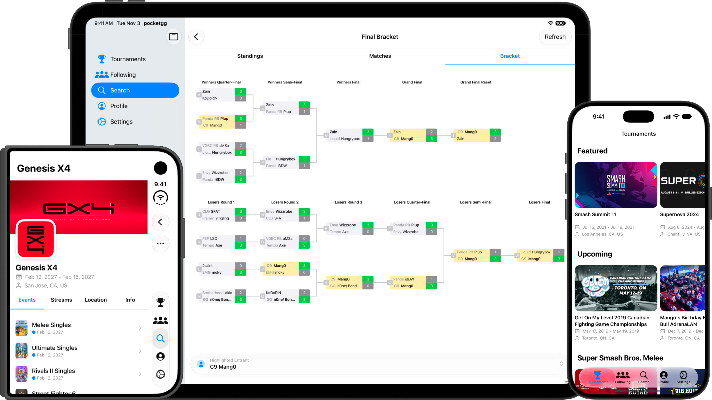

pocketgg aims to provide the cleanest and fastest experience available for using start.gg on mobile. Powered by start.gg's GraphQL API and featuring a fully native iOS design, pocketgg is the go-to companion app for video game tournament competitors and spectators alike.


Discover Tournaments
Select your favourite games and find all of the upcoming tournaments that feature those games, both in-person and online. You can also search to find any tournament hosted on start.gg.
Native Bracket View
No more awkward web views that have trouble scrolling or zooming in & out. pocketgg features a native bracket view that allows you to view any single/double elimination or round-robin bracket with ease.
Entrant Search & Highlighting
You can search for entrants within an event, and select one to highlight their path through the bracket, pools, matches, and standings.
Details at a Glance
View essential information for every tournament like events, location, streams, all the way down to individual sets, games, and seed numbers.
Your Personal Resume
Log in using your start.gg account, and view your profile to see your recent placements and tournaments. You can even feature a few results on your profile that you're particularly proud of.
Achievements
Turn your tournament history into milestones. Earn badges for events entered, placements, travel, and more, and show off your best ones on your pocketgg profile.
Stay connected with your local scene
Follow users to stay up to date with friends, or tournament organizers to see when's the next local to go 0-2 in.
And More
pocketgg includes lots of other features, such as the ability to add tournaments to your calendar, and pinning your favourite tournaments for easy access.